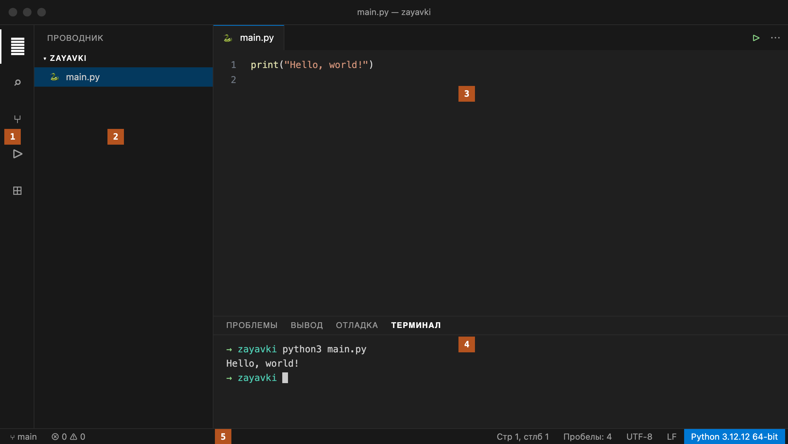
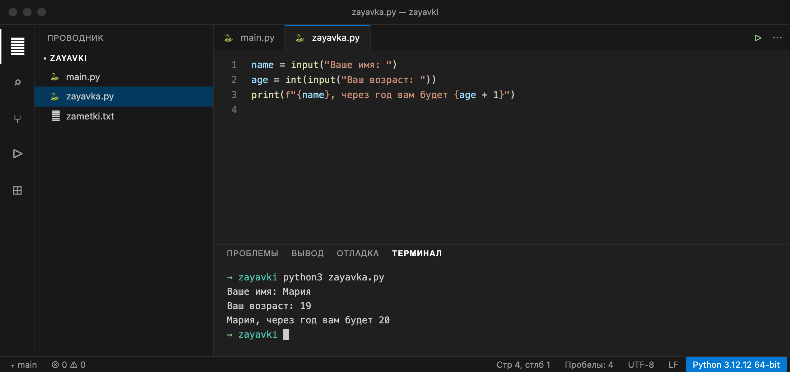
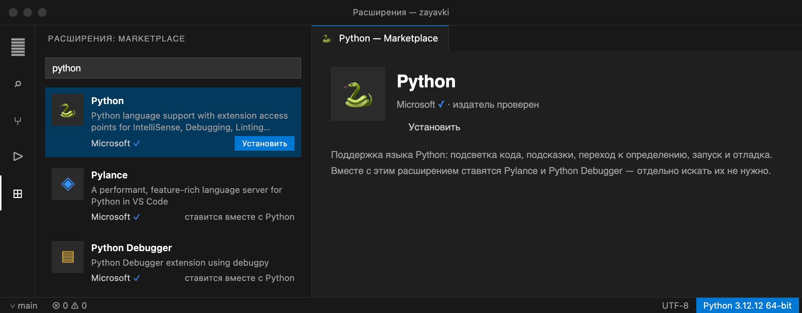
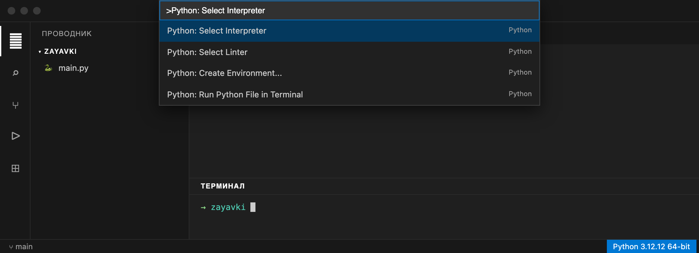
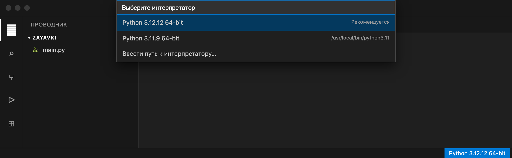
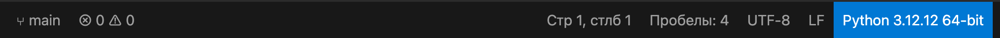
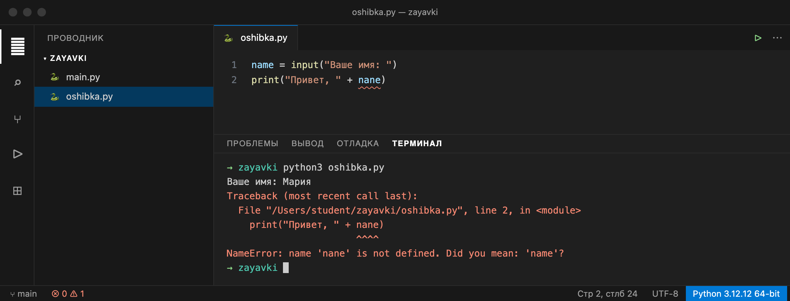

Справочник по Python · подготовка · среда разработки
Глава 0
Visual Studio Code:
установка и первый проект
Ставим редактор и интерпретатор, заводим папку проекта, пишем первый файл и запускаем его двумя способами — кнопкой и командой в терминале. Эта глава нужна один раз: дальше во всех главах справочника мы уже работаем в готовой среде.
«Пока среда не настроена, любая ошибка в коде выглядит как ошибка установки.»
- Категория
- Подготовка рабочего места
- Уровень
- Нулевой — опыта не требуется
- Связанные темы
- 1.1 Переменные, 1.3 print(), 1.5 input()
- Зачем это знать
- Писать и запускать программы у себя, а не только читать чужой код
§1Три программы, а не одна
Фраза «установить Python» звучит так, будто речь об одной программе. На деле для работы нужны три разные вещи, и путаница между ними — причина большей части вопросов на первых занятиях.
- Интерпретатор Python — программа, которая читает ваш код и выполняет его. Это и есть сам язык на компьютере. Без него код остаётся текстом.
- Редактор кода — программа, в которой вы этот текст набираете. Мы возьмём Visual Studio Code, дальше — просто VS Code.
- Терминал — окно, где вы отдаёте команды компьютеру текстом. Из него мы будем запускать программу и видеть, что она вывела.
Получается, редактор сам по себе ничего не выполняет: он передаёт файл интерпретатору и показывает, что тот ответил. Как раз поэтому редактор можно поменять, а код останется тем же.
§2Проверяем, установлен ли Python
Начинать установку стоит с проверки: на многих компьютерах Python уже стоит. Откройте терминал и выполните одну команду.
- Windows: нажмите Win, наберите
PowerShellи откройте его. Команда —python --version. - macOS: откройте программу «Терминал» через Cmd + Пробел. Команда —
python3 --version.
Python 3.12.12
Номер после 3.12 у вас будет свой — это номер исправления, он меняется часто и на наши задачи не влияет. Важно, чтобы строка начиналась с Python 3.12 или более поздней версии: примеры справочника рассчитаны на Python 3.12.
Если вместо номера версии вы увидели сообщение вроде command not found, не является внутренней или внешней командой или открылся магазин приложений — значит, интерпретатора нет или он не прописан в PATH. Переходим к установке.
PATH — это список папок, в которых система ищет программу по её имени. Когда вы набираете python, система перебирает папки из этого списка. Если папки с Python там нет, команда не найдётся, хотя сам Python на диске лежит.
§3Устанавливаем Python
Установщик берём только с официального сайта python.org/downloads. Сборки с других сайтов бывают изменены, а на учебных задачах разницу вы не заметите — зато можете поймать проблему, которую нечем объяснить.
- Скачайте установщик для своей системы. Для Windows это
Windows installer (64-bit). - Windows, самый важный шаг: в первом окне установщика поставьте галочку Add python.exe to PATH внизу. Она включает Python в тот самый список папок из предыдущего раздела.
- Нажмите
Install Nowи дождитесь конца установки. - Закройте терминал и откройте заново: список PATH читается при запуске, и старое окно об изменениях не знает.
- Проверьте установку командой из §2. Должен появиться номер версии.
Если галочку Add python.exe to PATH вы пропустили, команда python в терминале работать не будет, хотя Python установлен. Лечится повторным запуском установщика: он предложит Modify, а в macOS такой галочки нет — там путь настраивается сам.
На macOS в системе обычно уже есть Python, но версия может быть старой. Ставьте установщик с python.org рядом: он добавит команду python3 нужной версии и ничего не сломает.
§4Устанавливаем Visual Studio Code
VS Code скачиваем с code.visualstudio.com. Сайт сам определяет систему и предлагает нужный файл.
- Windows: запустите скачанный
.exe. В окне с дополнительными задачами отметьте Add to PATH — тогда редактор можно будет открывать командойcode. Остальные галочки по желанию: они добавляют пункты в контекстное меню проводника. - macOS: распакуйте архив и перетащите
Visual Studio Code.appв папкуПрограммы. Без этого шага редактор будет запускаться из папки загрузок и потеряется при первой же уборке. - Запустите VS Code. При первом запуске он предложит выбрать тему оформления — выбирайте любую, на работу это не влияет.
Интерфейс по умолчанию английский. Если он неудобен, поставьте языковой пакет: Ctrl + Shift + X, в поиске наберите Russian Language Pack, установите и перезапустите редактор. Дальше в главе названия пунктов даны по-русски, а в скобках — по-английски, чтобы вы нашли их в любом варианте.
§5Окно редактора: пять зон
Первое окно выглядит перегруженным, но постоянно нам нужны всего пять зон. Разберём их по номерам на схеме.

- Панель действий (Activity Bar) — узкая полоса слева. Переключает, что показано во второй зоне: файлы, поиск, отладка, расширения.
- Проводник (Explorer) — список файлов открытой папки. Здесь вы создаёте, открываете и переименовываете файлы.
- Редактор — то, ради чего всё остальное. Сверху вкладки открытых файлов, слева номера строк.
- Терминал — нижняя панель. Тот самый терминал из §1, только встроенный в окно редактора.
- Строка состояния — тонкая полоса внизу. Справа в ней показана выбранная версия Python; к этому месту мы вернёмся в §9.
§6Папка проекта, а не отдельный файл
VS Code открывает и одиночный файл, но так работать неудобно: редактор не видит соседние файлы, а терминал открывается неизвестно где. Поэтому мы всегда открываем папку, даже если файл в ней пока один.
Допустим, весь семестр мы пишем небольшой сервис заявок. Заведём для него папку zayavki и будем складывать туда все файлы курса.
- Создайте папку в удобном месте:
C:\Users\Имя\python\zayavkiна Windows или~/python/zayavkiна macOS. - В VS Code выберите Файл → Открыть папку… (File → Open Folder…) и укажите её.
- Если редактор спросит, доверяете ли вы авторам файлов в папке, ответьте «Да»: папку вы создали сами.
Имя папки лучше писать латиницей, без пробелов и с подчёркиваниями вместо них: zayavki, python_kurs. Русские буквы и пробелы в пути иногда ломают запуск из терминала, и разбираться в этом на первом занятии — потеря времени.
Папка «Загрузки» и рабочий стол — плохие места: файлы там теряются среди скачанного и случайно удаляются при уборке. Отдельная папка python в домашнем каталоге надёжнее. Облачные папки вроде OneDrive тоже дают сбои: синхронизация иногда блокирует файл в момент записи.
§7Первый файл и запуск кнопкой
Папка открыта, но она пустая. Создадим в ней файл программы.
- Наведите курсор на название папки в проводнике — справа появятся значки. Нажмите первый, Создать файл (New File).
- Наберите имя
main.pyи нажмите Enter. Расширение.pyобязательно: по нему редактор определяет, что это код на Python, и включает подсветку. - В открывшейся вкладке наберите одну строку:
print("Hello, world!") - Сохраните файл: Ctrl + S (на macOS Cmd + S). Пока файл не сохранён, на вкладке вместо крестика стоит точка.
- Нажмите треугольник ▷ в правом верхнем углу редактора. Внизу откроется терминал и выполнит файл.
print("Hello, world!")
Hello, world!
Теперь добавим второй файл и программу с вводом, чтобы посмотреть, как это выглядит в работе. Создайте zayavka.py тем же способом.
name = input("Ваше имя: ") age = int(input("Ваш возраст: ")) print(f"{name}, через год вам будет {age + 1}")

Обратите внимание на терминал внизу: подсказки Ваше имя: и Ваш возраст: появляются по очереди, программа ждёт ввода и продолжает работу после Enter. Как устроен input(), подробно разобрано в главе 1.5.
§8Расширения: минимальный набор
VS Code сам по себе — просто редактор текста. Работу с конкретным языком добавляют расширения. Их тысячи, но для нашего курса нужно ровно одно.
- Откройте вкладку расширений: значок с квадратами на панели действий или Ctrl + Shift + X.
- В поиске наберите
python. - Выберите расширение Python, у которого в издателях стоит Microsoft с синей галочкой, и нажмите Установить.

Вместе с ним установятся ещё два — Pylance и Python Debugger. Искать их отдельно не нужно: они приходят как зависимости. Pylance отвечает за подсказки и подчёркивание ошибок прямо в коде, Python Debugger — за пошаговую отладку.
Что это даёт: подсветку кода, автодополнение имён, подчёркивание опечаток до запуска, ту самую кнопку ▷ и выбор интерпретатора из §9. Без расширения кнопка запуска не появится, а код будет выглядеть одноцветным текстом.
Наборы «для Python» от сторонних авторов, отдельные форматтеры, линтеры и Code Runner на первых занятиях только мешают: они спорят друг с другом и запускают файл не тем интерпретатором. Ставьте их позже и по одному, когда поймёте, какая задача не решается без них.
§9Выбор интерпретатора
Python на компьютере может быть не один: системный, поставленный вами, ещё один из какой-нибудь программы. Редактору нужно сказать, какой из них запускать. Делается это через палитру команд — строку, из которой VS Code выполняет любые свои действия.
- Нажмите Ctrl + Shift + P (на macOS Cmd + Shift + P).
- Наберите
Python: Select Interpreterи выберите эту команду. - Из списка выберите версию 3.12 — обычно она помечена как рекомендуемая.


После выбора версия появится справа в строке состояния. Это удобная проверка: если программа ведёт себя странно, первым делом посмотрите сюда — возможно, файл запускается не тем Python, о котором вы думаете.

§10Запуск из терминала
Кнопка ▷ удобна, но она скрывает от вас, что именно происходит. А вот команда в терминале показывает это прямо: вы называете программу и файл, который ей передаёте. Кроме того, на практике и на экзамене программу чаще запускают именно так.
Откройте встроенный терминал: Терминал → Создать терминал (Terminal → New Terminal) или сочетание Ctrl + ` — это клавиша с буквой «ё». Терминал откроется уже в папке проекта, потому что мы открыли именно папку.
python main.py
python3 main.py
Hello, world!
Команда состоит из двух частей. python — имя интерпретатора, той самой программы из §1. main.py — имя файла, который ему передают. Файл ищется в текущей папке, поэтому важно понимать, где вы находитесь.
| Задача | Windows | macOS и Linux |
|---|---|---|
| Узнать текущую папку | pwd | pwd |
| Показать файлы в ней | dir | ls |
| Перейти в папку | cd zayavki | cd zayavki |
| Подняться на уровень выше | cd .. | cd .. |
| Запустить файл | python main.py | python3 main.py |
Набирать имя файла целиком не обязательно: наберите первые буквы и нажмите Tab — терминал допишет остальное сам. Заодно это проверка: если Tab ничего не дописал, такого файла в текущей папке нет.
§11Когда программа не запускается
Первые запуски редко проходят гладко, зато сообщения об ошибках у Python понятные, если прочитать их до конца. Разберём три, которые встречаются чаще всего.
Файл не найден. Терминал находится не в той папке или в имени файла опечатка.
python3: can't open file '/Users/student/python/main.py': [Errno 2] No such file or directory
Путь в кавычках — это то место, где интерпретатор искал файл. Сравните его с тем, где файл лежит на самом деле. Чаще всего выясняется, что терминал открыт на уровень выше: помогает cd zayavki.
Ошибка в коде. Файл найден и запущен, но во время выполнения Python встретил имя, которого не существует.

Traceback (most recent call last):
File "/Users/student/python/zayavki/oshibka.py", line 2, in <module>
print("Привет, " + nane)
^^^^
NameError: name 'nane' is not defined. Did you mean: 'name'?
Читать такое сообщение удобно снизу вверх. Последняя строка называет вид ошибки и само имя: nane не существует. Python даже предлагает исправление — Did you mean: 'name'?. Строкой выше видно место: файл, строка 2, и стрелки ^^^^ под виноватым словом. Обратите внимание, что редактор подчеркнул это имя волнистой линией ещё до запуска — это работа Pylance из §8.
Команда не найдена. Сообщение command not found: python или не является внутренней или внешней командой относится не к вашему коду, а к установке: система не нашла интерпретатор. Вернитесь к §2 и §3.
На Windows команда называется python, на macOS и Linux — python3. Команда python в этих системах может вести на старую версию 2.7 или вообще отсутствовать. Если сомневаетесь, проверьте версию: python3 --version.
§12Частые ошибки
| Что сделали | Что получилось | Как правильно |
|---|---|---|
| При установке Python на Windows не отметили Add python.exe to PATH | python не является внутренней или внешней командой | запустить установщик заново, выбрать Modify и добавить в PATH |
| Открыли в VS Code файл, а не папку | терминал открывается не в той папке, соседних файлов не видно | Файл → Открыть папку… и указать папку проекта |
Сохранили файл как main.py.txt или без расширения | нет подсветки, кнопка ▷ не появляется, запуск не работает | имя должно заканчиваться на .py, проверьте его в проводнике |
| Не сохранили файл перед запуском | выполняется прошлая версия кода, правки «не действуют» | Ctrl + S; точка на вкладке означает несохранённые изменения |
Назвали папку Мои программы | путь с пробелами и кириллицей ломает часть команд | латиница без пробелов: python_kurs |
Назвали файл print.py или random.py | программа ведёт себя непредсказуемо: имя файла перекрывает встроенное | не занимать имена встроенных модулей и функций |
| Поставили десяток расширений сразу | файл запускается не тем интерпретатором, подсказки дублируются | оставить только Python от Microsoft, остальное добавлять по одному |
§13Проверьте себя
Чем редактор отличается от интерпретатора?
Редактор — программа для набора текста программы; он не выполняет код, а только хранит и показывает его. Интерпретатор — программа, которая читает этот текст и выполняет инструкции. Поэтому один и тот же файл main.py можно набрать в любом редакторе, а запускает его всегда Python.
Почему после установки Python нужно закрыть и снова открыть терминал?
Список папок PATH читается в момент запуска терминала. Установщик дописал в него папку с Python, но уже открытое окно продолжает работать со старым списком и команду python не находит.
В терминале сообщение can't open file ... No such file or directory. Что проверить в первую очередь?
Путь, который указан в самом сообщении: именно там интерпретатор искал файл. Сравните его с настоящим расположением файла. Обычно терминал открыт не в той папке — помогает cd в папку проекта — либо в имени файла опечатка.
Сколько расширений нужно поставить для работы с Python и какие?
Одно: Python от Microsoft. Вместе с ним автоматически ставятся Pylance и Python Debugger, искать их отдельно не нужно. Остальные расширения на первых занятиях не требуются.
Программа выводит не то, что вы написали минуту назад. В чём самая вероятная причина?
Файл не сохранён: запускается его прошлая версия с диска. Признак — точка вместо крестика на вкладке файла. Сохраните Ctrl + S и запустите снова.
Задача для практики: создайте папку proverka, файл hello.py и запустите его из терминала.
Порядок такой: создать папку латиницей без пробелов → в VS Code открыть её через Файл → Открыть папку… → создать файл hello.py значком в проводнике → написать print("Проверка") → сохранить Ctrl + S → открыть терминал Ctrl + ` → выполнить python hello.py (на macOS python3 hello.py). В терминале должно появиться слово Проверка.
§14Шпаргалка
python --version
# Windows
python3 --version
# macOS, Linux
python main.py
python3 main.py
# из папки проекта
pwd
dir # Windows
ls # macOS
cd zayavki
Ctrl+S сохранить
Ctrl+` терминал
Ctrl+Shift+P палитра
Ctrl+Shift+X расширения
1. Открыть папку
2. Создать main.py
3. Сохранить
4. python main.py
zayavki ✓
python_kurs ✓
Мои файлы ✗
print.py ✗
Итог главы
Для работы нужны три вещи: интерпретатор Python выполняет код, VS Code помогает его набирать, терминал связывает их командой python main.py. Проект держим папкой, а не россыпью файлов; из расширений ставим одно — Python от Microsoft; перед запуском проверяем, что файл сохранён и что в строке состояния выбрана версия 3.12. Дальше можно переходить к первой главе справочника: среда больше не будет отвлекать от самого языка.